POSTUPAK · RADNI LIST V14 · FLUIDSIM
Postupak V14 · vježbe V39 i V40 · 4 sata
Postupak V14 — upravljanje ovisno o putu i o tlaku u FluidSIM-H
Cijeli radni list V14 korak po korak u FluidSIM-H: bušaća jedinica s brzim primicanjem, radnim posmakom preko regulatora protoka i brzim povratom, upravljana graničnim sklopkama, te uspravna preša kojoj povrat pokreće tlačna sklopka. Uz svaki korak su snimke zaslona, simulirane vrijednosti i potpuna rješenja.
- nacrtati krug s regulatorom protoka, nepovratnim ventilom i premosnim razvodnikom u vodu B
- zadati granične sklopke i kulisu oznakama na cilindru
- spojiti električno upravljanje ovisno o putu i ovisno o tlaku sa samodržanjem
- zadati obradak kao promjenjivu silu na klipnjači
- isprobati kvarove graničnih i tlačnih sklopki u simulaciji
O postupku
Ova stranica je postupak za radni list V14: sve što se radi na računalu, od nove sheme do predaje, redom kojim je zadano. Tekst zadatka, sheme, pitanja i rješenja isti su kao na stranicama vježbi V39 Upravljanje ovisno o putu i V40 Upravljanje ovisno o tlaku; ovdje su dopunjeni koracima u FluidSIM-u i rezultatima simulacije.
Rješenja su skrivena ispod svakog pitanja. Najprije riješite sami, a onda otvorite Prikaži rješenje i usporedite.
Gotove sheme (rješenja) za FluidSIM
- PIH_V39_rjesenje_v01.ct — V39: 4/3 P→T, regulator protoka 0,4 l/min, nepovratni ventil, 2/2 razvodnik Y3, B1–B2 (kulisa 120–200 mm)–B3, relej K1
- PIH_V40_rjesenje_v01.ct — V40: uspravna preša, obradak na 150 mm (promjenjiva sila), tlačna sklopka B2 4 MPa, B1, B3, releji K1 i K2
Datoteke se otvaraju u FluidSIM-H 4 (File → Open). Snimke zaslona napravljene su u FluidSIM-H 4.2 s engleskim sučeljem. Osnove rada u FluidSIM-u (nova shema, knjižnica, crtanje vodova, provjera, simulacija, dijagram put–korak) opisane su u Postupku V01, odjeljak 0.
0 · Prije početka
- File → New (Ctrl + N) otvara novu shemu; Window → Tile Vertically (Shift + F4) postavlja shemu i knjižnicu jednu uz drugu.
- Elemente povucite iz knjižnice na shemu i dvoklikom otvorite njihove dijaloge. Vod crtajte povlačenjem od priključka do priključka; povlačenjem na postojeći vod nastaje račvanje.
- Oznake (1A1, 1V1, 1S1, 0Z1 …) upisuju se elementom Text iz skupine Miscellaneous (uključite Frame Text).
- Execute → Check Superficially (F6) provjerava crtež; Start (F9), Pause (F8), Stop (F5).
- Ručno tipkalo aktivirate klikom mišem (dok držite tipku miša); Shift + klik zadrži ga pritisnutim. Ručica sa zasunom prebacuje se jednim klikom i ostaje u položaju.
- Granični ventil veže se uz cilindar oznakom: dvoklik na cilindar → kartica Actuating Labels → oznaka (npr. 1S2) i položaj na hodu (od–do u mm); ista oznaka upiše se dvoklikom na valjak graničnog ventila (Mechanical connection → Label).
- Dijagram put–korak: iz Miscellaneous povucite State Diagram i na njega povucite cilindre i ventile čije stanje želite pratiti.
FluidSIM-H
Obje vježbe rade se u hidrauličkoj inačici programa. Tlak se prikazuje u MPa (1 MPa = 10 bar). Ako FluidSIM javi Objects outside the drawing area, povećajte crtež: File → Drawing Size → DIN A3.
Dio A · V39 Upravljanje ovisno o putu
Zadatak
Bušaća jedinica na stroju za obradu kućišta ventila nosi vreteno sa svrdlom na hidrauličkom klizaču. Od početnog položaja do obratka ima 120 mm praznog puta, bušenje traje 60 mm, a zatim se klizač vraća u početni položaj. Da takt bude kratak, prazni put i povrat idu punom brzinom, a bušenje zadanom posmačnom brzinom koja se ne smije mijenjati kad svrdlo zatupi ili kad probije kroz stijenku. Promjena brzine vezana je uz položaj klizača — to je upravljanje ovisno o putu.
Na didaktičkom stolu klizač je dvoradni cilindar Ø25/16 mm s hodom 200 mm. Smjer određuje elektromagnetski razvodnik 4/3 (Y1 izvlačenje, Y2 povrat) centriran oprugama, sa srednjim položajem P→T i zatvorenim A i B. U vodu B nalaze se tlačno kompenzirani regulator protoka 1V2 (radni posmak), paralelno s njim nepovratni ventil 1V3 (brzi povrat) i elektromagnetski razvodnik 2/2 (Y3), zatvoren u mirnom položaju, koji otvoren premošćuje regulator (brzi hod). Granične sklopke: B1 — početni položaj, B2 — kulisa aktivna od 120 mm do kraja hoda, B3 — kraj radnog hoda na 180 mm. Agregat daje oko 2,0 l/min. Sigurnosni ventil namješta se na 40 bar zbog povišenja tlaka na strani klipnjače.
Zadatak: spojite krug, namjestite radnu brzinu na oko 23 mm/s, izmjerite trajanje svake faze bez tereta i s protusilom, izmjerite tlakove i provjerite što se događa pri kvaru granične sklopke B2.
Sigurnost pri radu
Pažnja
Ciklus se nakon pritiska na S1 odvija sam — klipnjača se giba bez daljnjeg djelovanja rukom, a mijenja i smjer. Granične sklopke namještajte samo uz isključen izvor 24 V. Pri radnom posmaku tlak na strani klipnjače viši je od tlaka crpke (do oko 68 bar uz 40 bar na klipnoj strani); elementi na strani B moraju podnositi najmanje 100 bar. Ne zatvarajte regulator 1V2 potpuno dok se klipnjača izvlači. Prije odspajanja isključite agregat, pritisnite S0, isključite izvor i provjerite da 0Z1, 1Z1 i 1Z2 pokazuju 0 bar.
Zaustavljanje u opasnosti izvodi se isključenjem izvora 24 V: oba elektromagneta ostaju bez napona, opruge centriraju razvodnik i klipnjača stane. Tipkalo S0 nije tipkalo za zaustavljanje u opasnosti — ono prekida ciklus i vraća klipnjaču. Vodiči ne smiju ležati u ulju ni preko crijeva. Brze spojke provjerite povlačenjem, propuštanje tražite kartonom, ulje obrišite odmah; ozljeda uljem pod tlakom traži hitnu liječničku pomoć. Zaštitne naočale cijelo vrijeme.
Shema
Početak: klipnjača je uvučena i aktivira B1. Pritiskom na S1 privuče K1 i zadrži se preko svog kontakta. K1 uključuje Y1 (staza 3) i Y3 (staza 4, B2 još nije aktiviran): ulje iz prstenaste strane odlazi kroz 1V4 u spremnik i klipnjača se izvlači punom brzinom. Na 120 mm kulisa aktivira B2, njegov mirni kontakt otvara, Y3 ostaje bez napona i ulje mora kroz regulator 1V2 — počinje radni posmak. Na 180 mm B3 otvara stazu 1, K1 otpusti, Y1 i Y3 ostaju bez napona, a mirni kontakti K1 i B1 u stazi 5 uključuju Y2: klipnjača se vraća punom brzinom (ulje ulazi kroz 1V3) dok ne aktivira B1.
Vježba se radi u FluidSIM-u
Koraci postupka vježbe koji se odnose na spajanje na didaktičkoj ploči i mjerenje štopericom ili manometrom izvode se u simulaciji. Gdje simulacija ne može pokazati pojavu iz pokusa, to je napisano uz korak.
A1 · Hidraulički dio s regulatorom i premosnim razvodnikom
- Nova shema u FluidSIM-H. Agregat: Pump unit (simplified representation), Operating Pressure 4 MPa (40 bar), Flow 2 l/min.
- Razvodnik 1V1: Valves → Solenoid Operated → 4/3 razvodnik s dva elektromagneta i oprugama. U Configure Way Valve srednje polje promijenite u simbol kojemu su A i B zatvoreni, a P i T spojeni (na simbolu: dvije „T” oznake gore i spoj P–T dolje). Opis 1V1; dvoklikom na oznake uz krajeve razvodnika upišite Y1 (lijevo, izvlačenje) i Y2 (desno, povrat).
- Vod B: tri paralelne grane između razvodnika i strane klipnjače. Regulator protoka 1V2: Shutoff Valves and Flow Control Valves → 2-way flow control valve, Nominal Flow 0.4 l/min; zakrenite ga (Edit → Rotate) tako da A bude prema cilindru, jer ulje pri posmaku teče od cilindra prema razvodniku. Nepovratni ventil 1V3 (Check valve) propušta prema cilindru. Razvodnik 1V4: Configurable directional valves → 2/n Way Valve, lijevo elektromagnet, desno opruga, u mirnom položaju zatvoren; opis 1V4, elektromagnet Y3.
- Cilindar 1A Ø25/16, hod 200 mm. Kartica Actuating Labels: B1 od 0 do 2 mm, B2 od 120 do 200 mm (polja Begin i End — to je kulisa), B3 od 180 do 200 mm. Manometri 0Z1 (P), 1Z1 (klipna strana) i 1Z2 (strana klipnjače, između cilindra i regulatora).
A2 · Električni dio i granične sklopke
- Električni dio u četiri staze: (1) +24V, S0 (Pushbutton, break), B3 (Break switch), S1 (Pushbutton, make) i paralelno radni kontakt K1, svitak K1; (2) radni kontakt K1 i elektromagnet Y1; (3) radni kontakt K1, mirni kontakt B2 i Y3; (4) mirni kontakt K1, mirni kontakt B1 i Y2. Kontakti graničnih sklopki dobivaju oznake B1, B2 i B3 i FluidSIM ih sam veže s oznakama na cilindru.
- Samodržanje i prekid na B3 nacrtani su u prvoj stazi, pa FluidSIM-ova shema ima četiri staze; na radnom listu ista je logika u pet staza. F6 → No superficial errors detected.
- State Diagram: cilindar (položaj, brzina) te manometri 1Z1 i 1Z2 (tlak), Fixed interval 0–12 s. Drugi redak tlaka na dijagramu je 1Z1, treći 1Z2.
Gdje se klikne
Tipkalo se u simulaciji pritisne klikom na sam kontakt (crticu između priključaka 3 i 4), ne na slovo E pokraj njega.
A3 · Ciklus: brzo primicanje, radni posmak, povrat
- Start: klipnjača uvučena, B1 aktiviran, nijedan elektromagnet nije pod naponom; srednji položaj P→T rasterećuje crpku (0Z1 = 0,07 MPa, Slika A3.1).
- Klik na S1: K1 privuče i drži se, Y1 i Y3 dobiju napon. Ulje iz strane klipnjače odlazi kroz otvoreni 1V4, klipnjača se izvlači brzinom 0,07 m/s, tlakovi su samo 0,03 MPa (Slika A3.2).
- Na 120 mm kulisa aktivira B2: Y3 ostaje bez napona i ulje mora kroz regulator 1V2. Brzina pada na 0,02 m/s (23 mm/s), 1Z1 pokazuje 3,99 MPa, a 1Z2 6,75 MPa — povišenje tlaka na strani klipnjače iz pitanja 3 (Slika A3.3).
- Na 180 mm B3 prekine stazu 1, K1 otpusti, Y1 i Y3 ostaju bez napona, a mirni kontakti K1 i B1 uključe Y2: klipnjača se vraća punom brzinom kroz nepovratni ventil 1V3 dok ne aktivira B1. Dijagram (Slika A3.4): brzo primicanje oko 1,8 s, radni posmak oko 2,6 s, povrat oko 1,6 s.
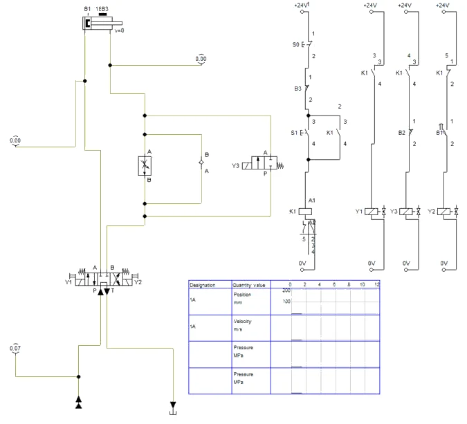
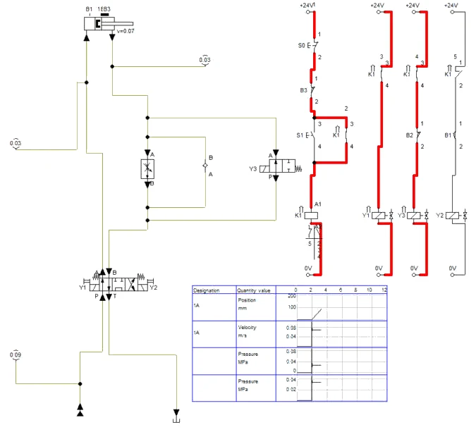
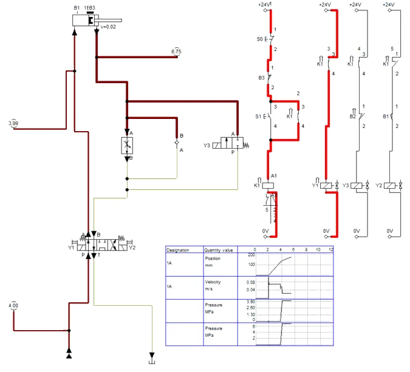
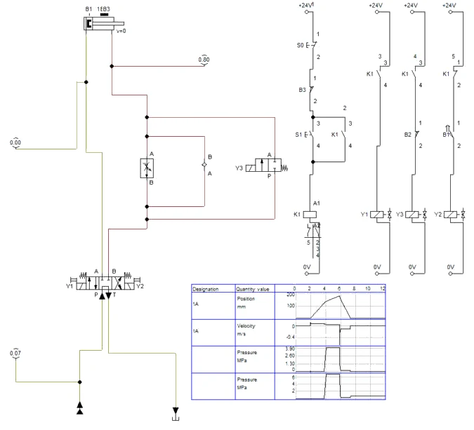
A4 · Protusila i kvar granične sklopke
- Protusila (pitanje 3b): u kartici Force profile cilindra postavite Constant force 800 N. Radni posmak ide istom brzinom 0,02 m/s, a 1Z2 padne na 3,99 MPa (proračun 4,01 MPa) — regulator drži protok, mijenja se samo tlak (Slika A4.1). Vratite silu na 0.
- Kvar „B2 ne otvara” (pitanje 7): dvoklikom na kontakt B2 u stazi 3 privremeno promijenite oznaku u B9 — kontakt više nije vezan s kulisom i ostaje zatvoren. Cijeli hod do B3 ide brzo, bez radnog posmaka (Slika A4.2). Vratite oznaku B2 prije spremanja.
- Kvar „prekid voda” isproba se brisanjem jednog vodiča u stazi 3: Y3 nikad ne dobije napon i cijeli hod ide radnom brzinom.
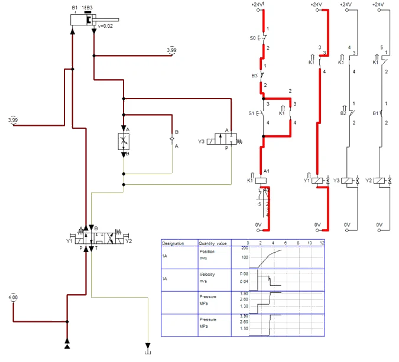
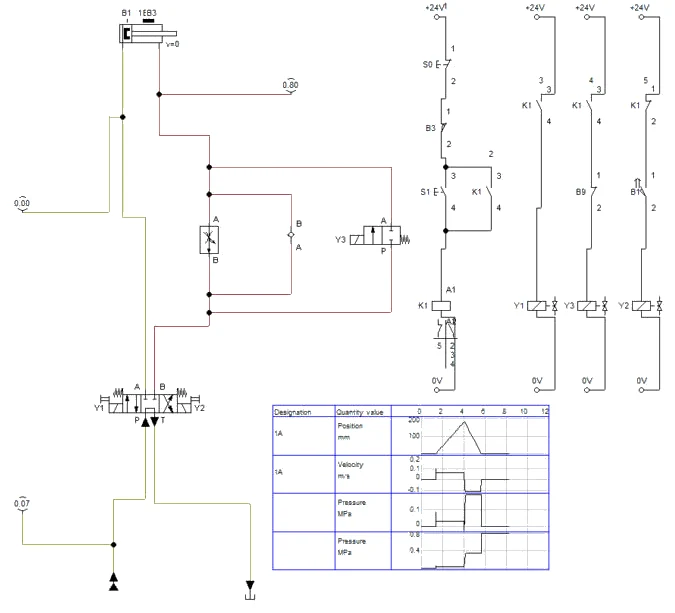
Simulacija i stol
Granične sklopke u FluidSIM-u uklapaju točno na zadanom položaju, a regulator protoka nema rasipanja. Na stolu se položaji B1, B2 i B3 namještaju ravnalom, pa se vremena faza razlikuju za nekoliko desetinki sekunde.
A5 · Pitanja i zadaci
1. Za svaku fazu ciklusa navedite koji su elektromagneti pod naponom i kojim putem ulje izlazi iz cilindra.
Prikaži rješenje
Brzo primicanje: Y1 i Y3; ulje iz prstenaste strane izlazi kroz otvoreni 1V4 (i djelomično kroz 1V2) i B→T razvodnika. Radni posmak: samo Y1; ulje izlazi samo kroz regulator 1V2. Povrat: samo Y2; ulje ulazi u prstenastu stranu kroz nepovratni ventil 1V3, a s klipne strane izlazi kroz A→T. Mirovanje u početnom položaju: nijedan elektromagnet; srednji položaj P→T rasterećuje crpku.
2. Izračunajte brzinu radnog posmaka ako je regulator 1V2 namješten na 0,40 l/min, i trajanje svih triju faza ciklusa. Koliko bi trajalo izvlačenje da cijeli hod od 180 mm ide radnom brzinom?
Prikaži rješenje
Regulator je na izlazu, pa određuje protok iz prstenaste strane: v = Q / A2 = 6 667 mm³/s / 289,8 mm² = 23,0 mm/s. Brzo primicanje 120 mm: 120 / 67,9 = 1,77 s. Radni posmak 60 mm: 60 / 23,0 = 2,61 s. Povrat 180 mm: 180 / 115,0 = 1,56 s. Ukupno 5,94 s (bez vremena prebacivanja). Cijeli hod od 180 mm radnom brzinom: 180 / 23,0 = 7,83 s, pa bi ciklus trajao 9,4 s — brzo primicanje štedi oko 3,5 s ili oko 37 %.
U FluidSIM-u
Simulacija (Slika A3.4): brzo primicanje oko 1,8 s, radni posmak oko 2,6 s, povrat oko 1,6 s.
3. Koliki tlak pokazuje 1Z2 pri radnom posmaku (a) bez tereta, (b) s protusilom 0,8 kN? Klipna strana je pri tlaku sigurnosnog ventila od 40 bar.
Prikaži rješenje
Ravnoteža: p2 · A2 = p1 · A1 − F. (a) p2 = 4 · 490,9 / 289,8 = 6,78 N/mm² = 67,8 bar. (b) p2 = (1963 − 800) / 289,8 = 4,01 N/mm² = 40,1 bar. Tlačno kompenzirani regulator održava stalan protok bez obzira na tlak ispred sebe, pa je brzina u oba slučaja jednaka — mijenja se samo tlak p2.
U FluidSIM-u
Simulacija: (a) 1Z2 = 6,75 MPa (Slika A3.3), (b) 1Z2 = 3,99 MPa uz istu brzinu (Slika A4.1).
4. Koliki protok za vrijeme radnog posmaka odlazi preko sigurnosnog ventila i koliko se snage pretvara u toplinu?
Prikaži rješenje
Na klipnu stranu ulazi Q1 = v · A1 = 23,0 · 490,9 = 11 290 mm³/s = 0,68 l/min. Višak 2,0 − 0,68 = 1,32 l/min odlazi kroz 0V1 pri 40 bar: P = 40 · 10⁵ · 1,32 / 60 000 ≈ 88 W. Tome se pribraja gubitak na samom regulatoru. U industriji se zato za ovakve jedinice koriste crpke s regulacijom tlaka ili protoka.
5. Zašto je regulator protoka ugrađen na izlazu iz cilindra (u vodu B), a ne na ulazu? Što se događa u trenutku kad svrdlo probije stijenku?
Prikaži rješenje
Pri proboju sila bušenja naglo pada gotovo na nulu. Da je regulator na ulazu, izlazna strana ne bi imala otpora: klizač bi zbog energije stlačenog ulja na klipnoj strani poskočio naprijed, svrdlo bi se zaglavilo ili slomilo. Regulator na izlazu drži klip uklještenim (vidi V36): tlak p2 samo naraste, a brzina ostaje ista.
6. Zašto je B2 izveden kao granična sklopka s kulisom, a ne s kratkom izbočinom koja ga aktivira samo u jednoj točki? Kako bi trebalo promijeniti električnu shemu da se koristi kratka izbočina?
Prikaži rješenje
Y3 mora ostati bez napona od 120 mm do 180 mm. Kulisa drži B2 aktiviranim cijelim tim putem, pa mirni kontakt B2 sam isključuje Y3. S kratkom izbočinom B2 bi se zatvorio odmah nakon prolaska i Y3 bi se ponovno uključio. Tada treba dodati relej K2 koji B2 postavlja i koji se samodrži do kraja radnog hoda (reset kontaktom K1 ili B3), a u stazu 4 umjesto B2 staviti mirni kontakt K2.
7. Što ste opazili pri dvama kvarovima B2 (kontakt ne otvara; prekid voda)? Koji je kvar opasan i zašto je 1V4 izabran tako da je u mirnom položaju zatvoren?
Prikaži rješenje
Kad kontakt ne otvara, Y3 ostaje pod naponom i cijeli hod ide brzo: u stvarnom stroju svrdlo bi punom brzinom udarilo u obradak — opasan kvar. Pri prekidu voda Y3 nikad ne dobije napon i cijeli hod ide radnom brzinom: ciklus je sporiji, ali siguran. Razvodnik 1V4 zatvoren u mirnom položaju znači da nestanak signala, prekid voda ili pregorjeli namot vode u sporo, sigurno stanje. Opasni kvar „kontakt ne otvara“ otkriva se nadzorom, npr. provjerom da se B2 promijenio prije nego što B3 javi kraj radnog hoda.
U FluidSIM-u
U simulaciji (Slika A4.2) kvar „kontakt ne otvara” daje cijeli hod punom brzinom.
8. Dopunite hidrauličku shemu: koji bi srednji položaj razvodnika 1V1 bio neprikladan za ovu jedinicu i zašto je izabran položaj P→T sa zatvorenim A i B?
Prikaži rješenje
Neprikladan je srednji položaj u kojem su A i B spojeni sa spremnikom (plivajući): pri zaustavljanju u opasnosti klizač ne bi bio zadržan i mogao bi se pod silom obrade ili težinom pomaknuti. Neprikladan je i položaj sa zatvorenim P, jer bi crpka u mirovanju tlačila preko 0V1 i grijala ulje. Položaj P→T s zatvorenim A i B zaustavlja klizač i rasterećuje crpku. Na shemu se crta srednji kvadrat s T-oznakama na A i B te spojem P s T.
Dio B · V40 Upravljanje ovisno o tlaku
Zadatak
Hidraulička preša HP-1 utiskuje ležajeve u kućišta različitih visina. Ležaj je dobro utisnut kad sila utiskivanja dosegne 50 kN; manja sila znači da ležaj nije do kraja u sjedištu, a veća oštećuje kućište. Budući da se visine kućišta razlikuju, povrat se ne može vezati uz položaj alata — vezuje se uz tlak u cilindru. Granična sklopka na donjem krajnjem položaju ipak je potrebna: ako u preši nema obratka, alat bi došao do kraja hoda, a upravljanje mora i tada sigurno vratiti alat i javiti grešku.
Na didaktičkom stolu preša je uspravni dvoradni cilindar Ø25/16 mm s hodom 200 mm i klipnjačom okrenutom prema dolje. Obradak (tvrdi drveni umetak) nalazi se tako da ga alat dotakne nakon oko 150 mm hoda. Elektromagnetski razvodnik 4/3 centriran oprugama (Y1 prešanje, Y2 povrat) ima srednji položaj P→T sa zatvorenim A i B. Tlačna sklopka B2 na vodu klipne strane namještena je na 40 bar. Granična sklopka B1 javlja gornji (početni) položaj, B3 donji krajnji položaj na 190 mm. Agregat daje oko 2,0 l/min, sigurnosni ventil je na 50 bar.
Zadatak: spojite krug, namjestite B2, izmjerite tlak pri kojem počinje povrat i vremena faza, provjerite ciklus bez obratka i pri nestanku signala B2 te izračunajte namještenje za prešu HP-1.
Sigurnost pri radu
Pažnja
Preša je stroj s opasnom točkom pritiska između alata i podloge. Obradak se ulaže i vadi samo kad je alat u gornjem položaju i izvor 24 V isključen. Ruke nikad ne stavljajte ispod alata, ni kad je ciklus završen. Na stvarnoj preši ciklus pokreće dvoručno tipkalo, a pristup zaštićuje svjetlosna zavjesa ili zaštitna vrata; ovdje je to zamijenjeno pravilom rada. Prije odspajanja vratite alat gore, isključite agregat i izvor i provjerite da 0Z1, 1Z1 i 1Z2 pokazuju 0 bar.
Pri namještanju tlačne sklopke privremeno se snižava tlak sigurnosnog ventila; nakon toga ga vratite na 50 bar i provjerite manometrom. Drveni umetak može pri prešanju pući — nosite zaštitne naočale i ne stojte izravno iznad njega. Granične sklopke namještajte uz isključen izvor. Brze spojke spajajte bez tlaka i provjerite povlačenjem; propuštanje tražite kartonom; ulje obrišite odmah. Ozljeda uljem pod tlakom traži hitnu liječničku pomoć.
Shema
Prešanje: alat je gore i aktivira B1. S1 uključuje K1, koji se samodrži; K1 uključuje Y1 i alat se spušta. Dok alat putuje, tlak na klipnoj strani je nizak (težina alata čak pomaže). Kad alat nalegne na obradak, tlak raste. Povrat: pri 40 bar zatvori se B2, privuče K2 i samodrži se. Mirni kontakt K2 u stazi 1 prekida K1, pa Y1 ostaje bez napona, a radni kontakt K2 uključuje Y2 — alat se vraća. Kad alat stigne gore, B1 aktivira se, njegov mirni kontakt u stazi 3 otvara i K2 otpušta. Razvodnik se centrira i crpka je rasterećena. Ako obratka nema, isti povrat pokreće B3 na donjem krajnjem položaju.
Vježba se radi u FluidSIM-u
Koraci postupka vježbe koji se odnose na spajanje na didaktičkoj ploči i mjerenje štopericom ili manometrom izvode se u simulaciji. Gdje simulacija ne može pokazati pojavu iz pokusa, to je napisano uz korak.
B1 · Uspravna preša i obradak u FluidSIM-H
- Nova shema. Cilindar 1A Ø25/16, hod 200 mm, uspravno s klipnjačom prema dolje: Edit → Rotate → 270°, zatim Edit → Mirror → Horizontally da priključci budu na desnoj strani. Kartica Actuating Labels: B1 od 0 do 2 mm (gornji položaj), B3 od 190 do 200 mm (donji krajnji položaj).
- Obradak: kartica Force profile → Variable force. Točke krivulje: 0 N do 148 mm, 3000 N od 151 mm do 200 mm (klik na krivulju dodaje točku, polja Piston Position i Force mijenjaju odabranu). Sila od 3000 N veća je od najveće sile cilindra pri 50 bar (2454 N), pa alat na 150 mm stane kao da je naišao na obradak.
- Razvodnik 1V1 kao u V39 (4/3, srednji položaj P→T, A i B zatvoreni, Y1 i Y2). Agregat 5 MPa, 2 l/min. Na vod klipne strane: tlačna sklopka B2 (Pressure switch, Switching pressure 4 MPa, oznaka B2) i manometar 1Z1; 1Z2 na vod strane klipnjače, 0Z1 na P.
B2 · Električni dio s tlačnom sklopkom
- Električni dio u četiri staze: (1) +24V, S0 (mirni), S1 (radni) u seriji s radnim kontaktom B1, paralelno s njima radni kontakt K1, zatim mirni kontakt K2 i svitak K1; (2) paralelno B2, B3 i radni kontakt K2, u seriji mirni kontakt B1, svitak K2; (3) radni kontakt K1 i Y1; (4) radni kontakt K2 i Y2.
- Kontakt B2 u stazi 2 je Make switch s oznakom B2 — FluidSIM ga veže s tlačnom sklopkom. Na radnom listu ista logika ima sedam staza; ovdje su paralelne grane nacrtane unutar staze. F6 → No superficial errors detected. State Diagram: cilindar (položaj, brzina) i 1Z1, 0–12 s.
B3 · Ciklus prešanja
- Start: alat gore, B1 aktiviran (Slika B3.1). Klik na kontakt S1: K1 privuče i drži se, Y1 spaja P→A i alat se spušta brzinom 0,07 m/s; 1Z1 pokazuje samo 0,02 MPa (Slika B3.2).
- Na 150 mm alat nalegne na obradak i tlak na klipnoj strani u djeliću sekunde naraste. Pri 4 MPa B2 zatvori, K2 privuče i drži se, mirni kontakt K2 prekine K1, Y1 ostane bez napona, a Y2 vrati alat brzinom 0,12 m/s (Slika B3.3).
- U gornjem položaju B1 otvori stazu 2, K2 otpusti, razvodnik se centrira. Dijagram (Slika B3.4): spuštanje oko 2,2 s, kratki šiljak tlaka do uklopa B2, povrat oko 1,3 s.
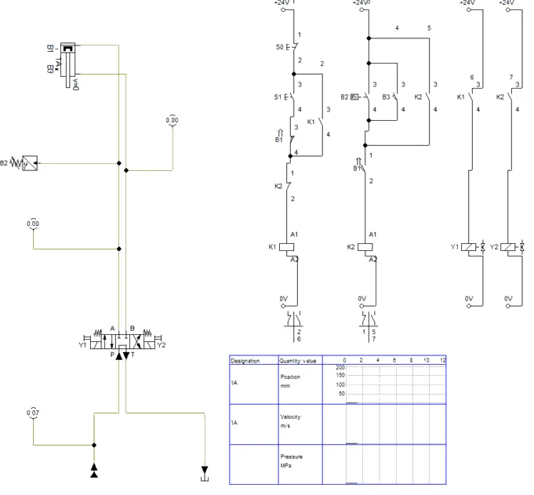
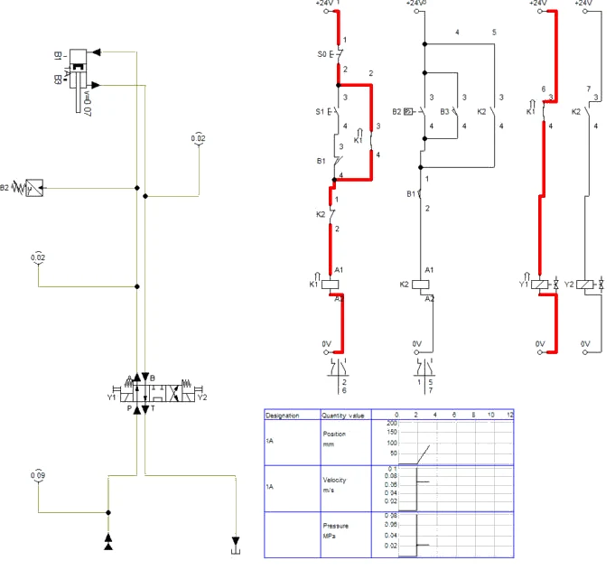
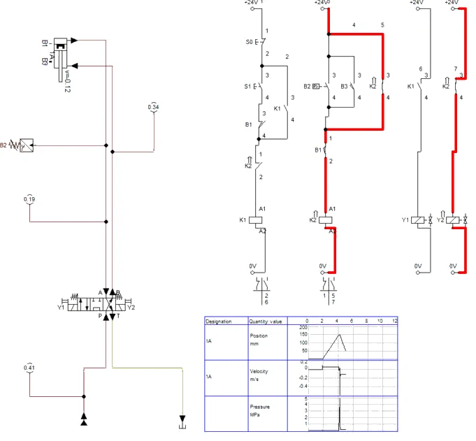
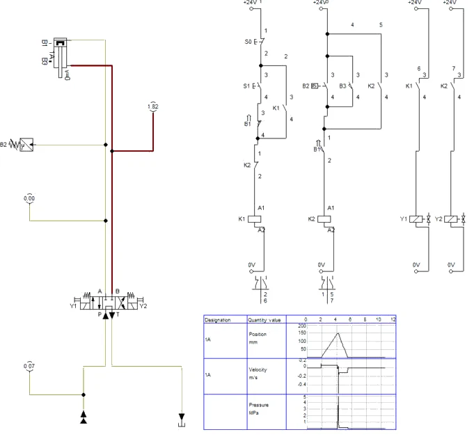
B4 · Bez obratka i kvar tlačne sklopke
- Bez obratka (pitanje 5): u Force profile odaberite Constant force 0 N. Alat ide do 190 mm, povrat pokrene B3, a 1Z1 cijelo vrijeme pokazuje manje od 0,1 MPa (Slika B4.1). Vratite Variable force — točke krivulje ostaju zapamćene.
- Izvučen vodič B2 (pitanje 6): privremeno promijenite oznaku kontakta B2 u B9. Alat stane na obratku, 1Z1 pokazuje 5,00 MPa (tlak sigurnosnog ventila), Y1 ostaje pod naponom i povrata nema (Slika B4.2). Vratite oznaku B2 prije spremanja.
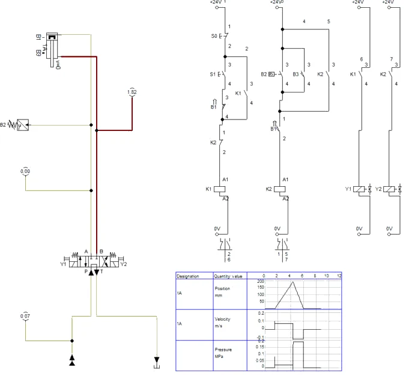
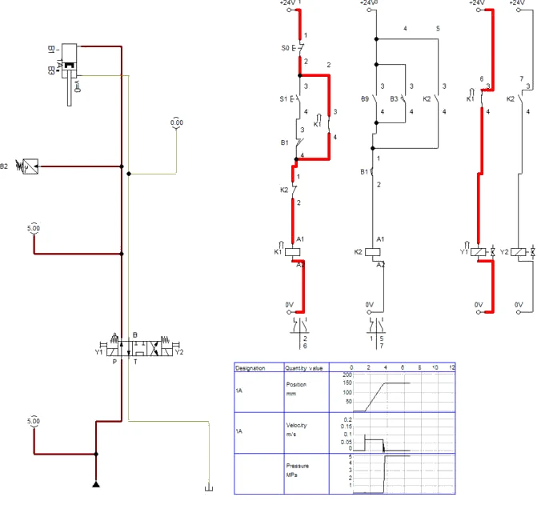
Simulacija i stol
Obradak je u modelu kruta sila, pa tlak naraste trenutačno; drveni umetak na stolu se malo ugne i tlak raste postupno. Masa alata nije zadana, pa tonjenje alata iz pitanja 8 simulacija ne pokazuje.
B5 · Pitanja i zadaci
1. Zašto je kontakt B1 u stazi 1 radni, a u stazi 3 mirni? Što bi se dogodilo da se u stazi 3 izostavi?
Prikaži rješenje
Radni kontakt B1 u stazi 1 dopušta pokretanje samo kad je alat gore, pa S1 u međupoložaju nema učinka. Mirni kontakt B1 u stazi 3 prekida samodržanje K2 kad alat stigne gore, čime završava povrat i omogućuje novi ciklus. Bez njega K2 bi ostao trajno privučen: Y2 bi stalno bio pod naponom, a mirni kontakt K2 u stazi 1 onemogućio bi svako sljedeće pokretanje.
2. Kolika je sila prešanja didaktičke preše pri 40 bar, teorijski i uz stupanj djelovanja 0,9? Koliko se mijenja sila ako sklopka uklapa s odstupanjem ± 1,5 bar?
Prikaži rješenje
A1 = 490,9 mm². F = 4 N/mm² · 490,9 mm² = 1963 N; uz η = 0,9: 1767 N. Odstupanje ± 1,5 bar = ± 0,15 N/mm² daje ± 0,15 · 490,9 = ± 74 N, odnosno oko ± 3,8 % sile.
3. Na koji tlak treba namjestiti tlačnu sklopku preše HP-1 (cilindar Ø80 mm) za silu utiskivanja od 50 kN? Koliko iznosi odstupanje sile uz ± 1,5 bar i je li dovoljan razmak do sigurnosnog ventila od 160 bar?
Prikaži rješenje
A = π · 80² / 4 = 5027 mm². p = 50 000 / 5027 = 9,95 N/mm² ≈ 99,5 bar (teorijski; uz trenje brtvi namješta se malo više, a točna vrijednost provjerava se mjerenjem sile). Odstupanje: ± 0,15 · 5027 = ± 754 N, oko ± 1,5 % od 50 kN. Razmak do 160 bar iznosi oko 60 bar, što je više nego dovoljno; najveća sila preše pri 160 bar je 80,4 kN.
4. Izračunajte trajanje spuštanja do obratka i povrata za didaktičku prešu (150 mm) i za HP-1 (250 mm, 22,0 l/min).
Prikaži rješenje
Didaktička preša: spuštanje 150 / 67,9 = 2,21 s, povrat 150 / 115,0 = 1,30 s. HP-1: spuštanje 250 / 73 = 3,42 s, povrat 250 / 120 = 2,08 s. Tome se dodaje vrijeme porasta tlaka od dodira do uklopa sklopke, koje ovisi o krutosti obratka (kod drvenog umetka i nekoliko desetinki sekunde, kod čelika gotovo trenutno).
U FluidSIM-u
Simulacija didaktičke preše (Slika B3.4): spuštanje oko 2,2 s, povrat oko 1,3 s.
5. Bez obratka povrat je pokrenula granična sklopka B3. Zašto je B3 potrebna, kad bi tlak na kraju hoda ionako narastao do 50 bar i zatvorio B2?
Prikaži rješenje
(a) Razlikovanje stanja: povrat preko B2 znači „prešano“, povrat preko B3 znači „nema obratka ili je obradak preplitak“, što upravljanje može javiti kao grešku. (b) Zaštita od kvara B2: ako sklopka ili njezin vod zakaže, bez B3 bi alat ostao pritisnut na kraju hoda, crpka bi tlačila preko 0V1, a ciklus nikad ne bi završio. (c) Alat ne udara u mehanički graničnik cilindra. Dvije neovisne sklopke za povrat dio su dobre prakse na prešama.
U FluidSIM-u
U simulaciji (Slika B4.1) povrat bez obratka pokreće B3, a tlak ostaje ispod 0,1 MPa.
6. Zašto se tlačna sklopka ne smije namjestiti na tlak jednak ili blizak tlaku sigurnosnog ventila? Što se dogodilo u pokusu s izvučenim vodičem B2?
Prikaži rješenje
Sigurnosni ventil počinje otvarati već ispod nazivnog tlaka (karakteristika ventila, vidi V30); ako je sklopka namještena na 50 bar, tlak je možda nikad ne dosegne i preša ostaje pritisnuta. Preporuka je razmak od barem 10 % ili 10 bar. U pokusu s izvučenim vodičem alat je pritisnuo obradak, tlak je narastao do 50 bar i ostao — povrat se nije dogodio jer alat nije stigao do B3 (obradak ga je zaustavio). Operater je morao prekinuti ciklus. To pokazuje da B3 ne štiti od svih kvarova; dodaje se nadzor vremena (vidi pitanje 7).
U FluidSIM-u
U simulaciji (Slika B4.2) alat ostaje na obratku pod 5,00 MPa i ne vraća se.
7. Dopunite električnu shemu: ležaj treba nakon postizanja tlaka držati pod silom 2 s, a ako tlak ne bude postignut u 8 s od početka spuštanja, alat se mora vratiti i upaliti lampica greške. Koje elemente dodajete i gdje?
Prikaži rješenje
Vrijeme držanja: B2 u stazi 3 zamjenjuje se radnim kontaktom vremenskog releja K3 s kašnjenjem ukapčanja (2 s), a u novu stazu dodaje se B2 u seriji sa svitkom K3. Nadzor: vremenski relej K4 (8 s) čiji svitak napaja kontakt K1; radni kontakt K4 dodaje se paralelno s B2/B3 u stazu K2 (prisilni povrat) i u novu stazu s lampicom greške H1 i samodržanjem koje se briše tipkalom za potvrdu. Kod elektrohidraulike s PLC-om iste se funkcije ostvaruju programom.
8. Uspravna preša s klipnjačom prema dolje u srednjem položaju P→T pomalo „tone“. Zašto? Dopunite hidrauličku shemu da alat sigurno stoji gore.
Prikaži rješenje
Težina alata i klipa stvara tlak na prstenastoj strani, a klipni razvodnik kroz zračnost propušta ulje iz voda B, pa alat polako silazi. Dopuna: u vod B između razvodnika i cilindra ugrađuje se ventil za držanje tereta — protuteretni (balansni) ventil s nepovratnim ventilom za dizanje ili deblokirajući nepovratni ventil upravljan tlakom iz voda A (vidi V33). Protuteretni ventil ima prednost jer alat spušta mirno i ne dopušta mu da pod vlastitom težinom ubrza.
Zapis simulacije
Tablica Zapis: simulacija iz radnog lista, popunjena prema simulaciji u FluidSIM-H 4.2 (rješenje).
| Veličina | Očekivano (proračun / zadatak) | FluidSIM | Komentar |
|---|---|---|---|
| Brzo primicanje 120 mm (V39) | 1,77 s, 67,9 mm/s | oko 1,8 s, 0,07 m/s (Slika A3.2) | Y1 + Y3 |
| Radni posmak 60 mm (V39) | 2,61 s, 23,0 mm/s | oko 2,6 s, 0,02 m/s (Slika A3.3) | 1V2 = 0,4 l/min |
| 1Z2 pri posmaku bez tereta (V39) | 67,8 bar | 6,75 MPa (Slika A3.3) | |
| 1Z2 pri posmaku s 0,8 kN (V39) | 40,1 bar | 3,99 MPa (Slika A4.1) | brzina ista |
| Povrat 180 mm (V39) | 1,56 s | oko 1,6 s (Slika A3.4) | kroz 1V3 |
| Kvar B2 ne otvara (V39) | cijeli hod brzo | cijeli hod brzo (Slika A4.2) | opasno |
| Tlak povrata (V40) | 40 bar | 4 MPa, B2 (Slika B3.4) | |
| Spuštanje 150 mm / povrat (V40) | 2,21 s / 1,30 s | oko 2,2 s / 1,3 s (Slika B3.4) | |
| Bez obratka (V40) | povrat na B3 | povrat na B3, 190 mm (Slika B4.1) | pitanje 5 |
| Izvučen vodič B2 (V40) | nema povrata | 5,00 MPa, nema povrata (Slika B4.2) | pitanje 6 |
Spremanje i predaja
- File → Save As. U polje Naziv datoteke upišite
PIH_2026-2027_Prezime_Ime_V14.ct(bez kvačica) i kliknite Spremi. Kasnije spremanje: File → Save (Ctrl + S). - Snimka: za vrijeme simulacije (nakon Pause) snimite zaslon sa shemom i dijagramom put–korak (u sustavu Windows: Windows + Shift + S), ili shemu spremite naredbom File → TIFF Export.
- Ispunite radni list (proračuni i zapis simulacije).
- Predajte u sustav za e-učenje: shemu
.ct, snimku zaslona simulacije i ispunjen radni list. Sve datoteke imenujtePIH_2026-2027_Prezime_Ime_….
Primjena na vlastiti zadatak P##
Projekt SL-3, vaša varijanta P## (ulazni podaci u „Projektni zadaci P01–P21”): ako bi savijanje lima izvodila hidraulička preša, odredite tlak uklopa tlačne sklopke za silu vaše varijante kao u pitanju 3 iz V40 i odlučite treba li alat prije savijanja brzo primaknuti kao u V39 (gdje bi stajala kulisa).
Kod pitanja: susjed → radni list i ova stranica → nastavnik. AI smijete koristiti uz navođenje što je i kako napravljeno.
Za nastavnika
Dio A · vježba V39
Otvori upute za nastavnika
Priprema
Provjerite dopušteni tlak elemenata na strani B (najmanje 100 bar). Pripremite nosač graničnih sklopki s oznakama 0, 120 i 180 mm i kulisu za B2. Provjerite da izvor 24 V ima vidljivu sklopku za isključenje koja služi kao zaustavljanje u opasnosti. Unaprijed isprobajte ciklus i zapišite namještenje regulatora za 23 mm/s. Za pokus kvara pripremite kratak premosni vodič.
Tijek sata
- Uvod (10 min): upravljanje ovisno o putu, brzi i radni hod, uloga regulatora na izlazu, sigurno stanje pri kvaru.
- Sheme i dijagram put–vrijeme (15 min).
- Spajanje, postavljanje sklopki, pregled (20 min).
- Namještanje radne brzine, mjerenja bez tereta i s protusilom (20 min).
- Pokusi kvara B2 i rasprava (15 min).
- Ispuštanje tlaka, rastavljanje (10 min).
Očekivani rezultati
Brzo primicanje 1,8–2,0 s, radni posmak oko 2,6 s (namješteno), povrat 1,6–1,8 s. Radna brzina s protusilom 0,8 kN razlikuje se manje od 5 %. 1Z2 pri radnom posmaku bez tereta 60–70 bar, s protusilom 35–45 bar. Pri premoštenju B2 cijeli hod ide brzo, pri prekidu voda sporo. Polaznik prepoznaje opasni kvar i obrazlaže mirni položaj 1V4.
Česte pogreške
- regulator 1V2 ili nepovratni ventil 1V3 okrenuti naopako, pa povrat ide kroz regulator;
- korištenje radnog umjesto mirnog kontakta B2 u stazi 4;
- B3 spojen prije točke samodržanja, pa ne prekida ciklus;
- računanje radne brzine s površinom A1 umjesto A2;
- namještanje graničnih sklopki pod naponom.
Vrednovanje
| Kriterij | Bodovi |
|---|---|
| Hidraulička i električna shema, dijagram put–vrijeme | 20 |
| Spajanje, postavljanje sklopki, provjera ciklusa | 20 |
| Namještanje radne brzine i mjerenja | 15 |
| Računski zadaci (2–4) | 20 |
| Pokus kvara i obrazloženja (5–8) | 15 |
| Sigurnost i urednost | 10 |
| Ukupno | 100 |
Dio B · vježba V40
Otvori upute za nastavnika
Priprema
Pripremite nekoliko tvrdih drvenih umetaka iste visine; meko drvo se utiskuje i tlak raste presporo. Provjerite čvrstoću podloge i nosača cilindra — pri 50 bar sila je oko 2,5 kN. Postavite granične sklopke i provjerite da B1 sigurno aktivira u gornjem položaju. Označite na 0V1 osnovno namještenje od 50 bar. Na mjernom listu pripremite tablicu s tri ciklusa (najviši tlak, vremena faza) i polja za opažanja bez obratka i s izvučenim vodičem B2.
Tijek sata
- Uvod (10 min): upravljanje ovisno o tlaku i putu, primjer utiskivanja ležaja, opasnost preše i pravila rada.
- Crtanje shema i dijagrama put–vrijeme s krivuljom tlaka (15 min).
- Spajanje, postavljanje sklopki, pregled, provjera ciklusa preko B3 (20 min).
- Namještanje B2 i mjerenja s obratkom (20 min).
- Pokusi bez obratka i s prekidom B2, rasprava i pitanja 5–8 (15 min).
- Vraćanje 0V1, ispuštanje tlaka, rastavljanje (10 min).
Očekivani rezultati
Povrat počinje pri 39–42 bar na 1Z1. Spuštanje 2,0–2,4 s (težina alata malo ubrzava), prešanje 0,1–0,5 s, povrat 1,3–1,5 s. Bez obratka povrat pokreće B3. S prekinutim vodom B2 alat ostaje pritisnut na obratku pri 50 bar. Polaznik predlaže vremenski nadzor i ventil za držanje alata.
Česte pogreške
- tlačna sklopka spojena na vod B, pa povrat nastupa već pri spuštanju;
- izostavljen mirni kontakt K2 u stazi 1, pa Y1 i Y2 istodobno dobiju napon;
- B1 u stazi 3 spojen kao radni kontakt, pa K2 odmah otpusti;
- namještanje B2 bez snižavanja 0V1, pa se uklopna točka ne može odrediti;
- ulaganje obratka dok je izvor uključen.
Vrednovanje
| Kriterij | Bodovi |
|---|---|
| Hidraulička i električna shema, dijagram put–vrijeme s tlakom | 20 |
| Spajanje, postavljanje sklopki, provjera ciklusa | 20 |
| Namještanje B2 i mjerenja | 15 |
| Računski zadaci (2–4) | 15 |
| Pokusi kvara, obrazloženja i dopune (5–8) | 20 |
| Sigurnost i urednost | 10 |
| Ukupno | 100 |
Napomena za FluidSIM
Gotove sheme za usporedbu su gore na stranici. Kulisa B2 u V39 zadana je rasponom 120–200 mm u kartici Actuating Labels, pa električna shema ostaje kao na radnom listu (bez dodatnog releja). Regulator protoka je 2-way flow control valve s 0,4 l/min. U V40 obradak je promjenjiva sila na klipnjači (0 N do 148 mm, 3000 N od 151 mm); cilindar je bez mase, pa tonjenje alata nije simulirano. Kvarovi sklopki pokazuju se privremenom promjenom oznake kontakta (B2 → B9); u spremljenim rješenjima oznake su ispravne.